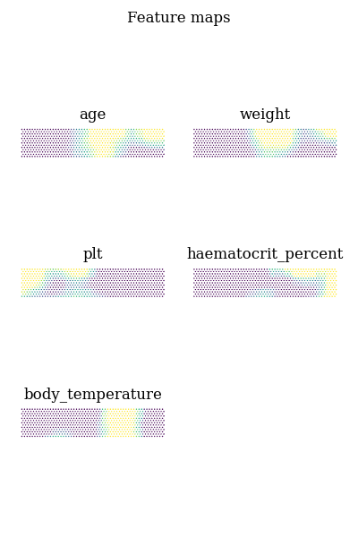

Note
Click here to download the full example code
SOM: Dengue dataset¶
..TODO: Add description
Training attributes: age, weight, plt, haematocrit_percent, body_temperature.
Attributes used in cluster comparison: bleeding, shock, bleeding_gum, abdominal_pain, ascites, bleeding_mucosal, bleeding_skin.

- 
Out:
quantization error: 0.49001230631996234
+-----------------------------+--------+--------------------+---------------------+--------------------+--------------------+
| | | Overall | 0 | 1 | 2 |
+=============================+========+====================+=====================+====================+====================+
| n | | 15036 | 6020 | 4653 | 4363 |
+-----------------------------+--------+--------------------+---------------------+--------------------+--------------------+
| abdominal_pain, n (%) | False | 10356 (68.9) | 4896 (81.3) | 3441 (74.0) | 2019 (46.3) |
+-----------------------------+--------+--------------------+---------------------+--------------------+--------------------+
| | True | 4680 (31.1) | 1124 (18.7) | 1212 (26.0) | 2344 (53.7) |
+-----------------------------+--------+--------------------+---------------------+--------------------+--------------------+
| ascites, n (%) | False | 12705 (84.5) | 5465 (90.8) | 3865 (83.1) | 3375 (77.4) |
+-----------------------------+--------+--------------------+---------------------+--------------------+--------------------+
| | True | 2331 (15.5) | 555 (9.2) | 788 (16.9) | 988 (22.6) |
+-----------------------------+--------+--------------------+---------------------+--------------------+--------------------+
| bleeding, n (%) | False | 11197 (74.5) | 5336 (88.6) | 3201 (68.8) | 2660 (61.0) |
+-----------------------------+--------+--------------------+---------------------+--------------------+--------------------+
| | True | 3839 (25.5) | 684 (11.4) | 1452 (31.2) | 1703 (39.0) |
+-----------------------------+--------+--------------------+---------------------+--------------------+--------------------+
| bleeding_gum, n (%) | False | 13445 (89.4) | 5264 (87.4) | 4181 (89.9) | 4000 (91.7) |
+-----------------------------+--------+--------------------+---------------------+--------------------+--------------------+
| | True | 1591 (10.6) | 756 (12.6) | 472 (10.1) | 363 (8.3) |
+-----------------------------+--------+--------------------+---------------------+--------------------+--------------------+
| bleeding_mucosal, n (%) | False | 12348 (82.1) | 5769 (95.8) | 4031 (86.6) | 2548 (58.4) |
+-----------------------------+--------+--------------------+---------------------+--------------------+--------------------+
| | True | 2688 (17.9) | 251 (4.2) | 622 (13.4) | 1815 (41.6) |
+-----------------------------+--------+--------------------+---------------------+--------------------+--------------------+
| bleeding_skin, n (%) | False | 7864 (52.3) | 4351 (72.3) | 1550 (33.3) | 1963 (45.0) |
+-----------------------------+--------+--------------------+---------------------+--------------------+--------------------+
| | True | 7172 (47.7) | 1669 (27.7) | 3103 (66.7) | 2400 (55.0) |
+-----------------------------+--------+--------------------+---------------------+--------------------+--------------------+
| dsource, n (%) | 01nva | 47 (0.3) | | 12 (0.3) | 35 (0.8) |
+-----------------------------+--------+--------------------+---------------------+--------------------+--------------------+
| | 06dx | 312 (2.1) | 22 (0.4) | 272 (5.8) | 18 (0.4) |
+-----------------------------+--------+--------------------+---------------------+--------------------+--------------------+
| | 13dx | 8108 (53.9) | 4563 (75.8) | 1501 (32.3) | 2044 (46.8) |
+-----------------------------+--------+--------------------+---------------------+--------------------+--------------------+
| | 32dx | 10 (0.1) | 1 (0.0) | 7 (0.2) | 2 (0.0) |
+-----------------------------+--------+--------------------+---------------------+--------------------+--------------------+
| | 42dx | 16 (0.1) | | 16 (0.3) | |
+-----------------------------+--------+--------------------+---------------------+--------------------+--------------------+
| | d001 | 48 (0.3) | | 19 (0.4) | 29 (0.7) |
+-----------------------------+--------+--------------------+---------------------+--------------------+--------------------+
| | df | 1719 (11.4) | 26 (0.4) | 90 (1.9) | 1603 (36.7) |
+-----------------------------+--------+--------------------+---------------------+--------------------+--------------------+
| | dr | 1542 (10.3) | 481 (8.0) | 666 (14.3) | 395 (9.1) |
+-----------------------------+--------+--------------------+---------------------+--------------------+--------------------+
| | fl | 215 (1.4) | | 123 (2.6) | 92 (2.1) |
+-----------------------------+--------+--------------------+---------------------+--------------------+--------------------+
| | md | 3019 (20.1) | 927 (15.4) | 1947 (41.8) | 145 (3.3) |
+-----------------------------+--------+--------------------+---------------------+--------------------+--------------------+
| gender, n (%) | Female | 6518 (43.3) | 2701 (44.9) | 1858 (39.9) | 1959 (44.9) |
+-----------------------------+--------+--------------------+---------------------+--------------------+--------------------+
| | Male | 8518 (56.7) | 3319 (55.1) | 2795 (60.1) | 2404 (55.1) |
+-----------------------------+--------+--------------------+---------------------+--------------------+--------------------+
| shock, n (%) | False | 14320 (95.2) | 5977 (99.3) | 4384 (94.2) | 3959 (90.7) |
+-----------------------------+--------+--------------------+---------------------+--------------------+--------------------+
| | True | 716 (4.8) | 43 (0.7) | 269 (5.8) | 404 (9.3) |
+-----------------------------+--------+--------------------+---------------------+--------------------+--------------------+
| age, median [Q1,Q3] | | 9.0 [5.0,12.0] | 5.0 [3.0,8.0] | 12.0 [11.0,13.0] | 8.0 [6.0,11.0] |
+-----------------------------+--------+--------------------+---------------------+--------------------+--------------------+
| temperature, median [Q1,Q3] | | 37.6 [37.2,38.5] | 37.6 [37.3,38.3] | 38.5 [37.9,39.0] | 37.1 [37.0,37.5] |
+-----------------------------+--------+--------------------+---------------------+--------------------+--------------------+
| hct, median [Q1,Q3] | | 40.5 [37.3,45.0] | 37.2 [35.1,39.8] | 42.5 [39.6,46.0] | 44.0 [40.3,49.0] |
+-----------------------------+--------+--------------------+---------------------+--------------------+--------------------+
| plt, median [Q1,Q3] | | 175.0 [74.0,251.0] | 233.0 [171.0,299.0] | 102.0 [54.0,185.0] | 133.0 [43.0,231.0] |
+-----------------------------+--------+--------------------+---------------------+--------------------+--------------------+
| weight, median [Q1,Q3] | | 26.5 [19.0,37.0] | 19.0 [14.0,25.0] | 39.0 [31.0,46.0] | 26.0 [20.0,35.5] |
+-----------------------------+--------+--------------------+---------------------+--------------------+--------------------+
15 16 17 18 19 20 21 22 23 24 25 26 27 28 29 30 31 32 33 34 35 36 37 38 39 40 41 42 43 44 45 46 47 48 49 50 51 52 53 54 55 56 57 58 59 60 61 62 63 64 65 66 67 68 69 70 71 72 73 74 75 76 77 78 79 80 81 82 83 84 85 86 87 88 89 90 91 92 93 94 95 96 97 98 99 100 101 102 103 104 105 106 107 108 109 110 111 112 113 114 115 116 117 118 119 120 121 122 123 124 125 126 127 128 129 130 131 132 133 134 135 136 137 138 139 140 141 142 143 144 145 146 | import warnings
import pandas as pd
import numpy as np
import matplotlib.pyplot as plt
from matplotlib import rcParams
from matplotlib.colors import ListedColormap
from minisom import MiniSom
from sklearn import preprocessing
from sklearn.cluster import KMeans
from tableone import TableOne
# Utils
from pkgname.utils.som_utils import diff_graph_hex, feature_maps, project_hex
from pkgname.utils.data_loader import load_dengue
from pkgname.utils.plot_utils import plotBox, formatTable
# Configuration
rcParams.update({'figure.autolayout': True})
N_CLUSTERS = 3
SEED = 0
np.random.seed(SEED)
# %-----------
# Load dataset
# ------------
features = ["dsource", "age", "gender", "weight", "bleeding", "plt",
"shock", "haematocrit_percent", "bleeding_gum", "abdominal_pain",
"ascites", "bleeding_mucosal", "bleeding_skin", "body_temperature"]
df = load_dengue(usecols=['study_no']+features)
for feat in features:
df[feat] = df.groupby('study_no')[feat].ffill().bfill()
df = df.loc[df['age'] <= 18]
df = df.dropna()
df = df.groupby(by="study_no", dropna=False).agg(
dsource=pd.NamedAgg(column="dsource", aggfunc="last"),
age=pd.NamedAgg(column="age", aggfunc="max"),
gender=pd.NamedAgg(column="gender", aggfunc="first"),
weight=pd.NamedAgg(column="weight", aggfunc=np.mean),
bleeding=pd.NamedAgg(column="bleeding", aggfunc="max"),
plt=pd.NamedAgg(column="plt", aggfunc="min"),
shock=pd.NamedAgg(column="shock", aggfunc="max"),
haematocrit_percent=pd.NamedAgg(column="haematocrit_percent", aggfunc="max"),
bleeding_gum=pd.NamedAgg(column="bleeding_gum", aggfunc="max"),
abdominal_pain=pd.NamedAgg(column="abdominal_pain", aggfunc="max"),
ascites=pd.NamedAgg(column="ascites", aggfunc="max"),
bleeding_mucosal=pd.NamedAgg(column="bleeding_mucosal", aggfunc="max"),
bleeding_skin=pd.NamedAgg(column="bleeding_skin", aggfunc="max"),
body_temperature=pd.NamedAgg(column="body_temperature", aggfunc=np.mean),
).dropna()
mapping = {'Female': 0, 'Male': 1}
before_mapping = df
df = df.replace({'gender': mapping})
info_feat = ["shock", "bleeding", "bleeding_gum", "abdominal_pain", "ascites",
"bleeding_mucosal", "bleeding_skin", "gender"]
data_feat = ["age", "weight", "plt", "haematocrit_percent", "body_temperature"]
info = df[info_feat]
data = df[data_feat]
scaler = preprocessing.StandardScaler()
x = scaler.fit_transform(data.values)
# ----------------------
# Train SOM
# ----------------------
# Create SOM
som = MiniSom(20, 20, x.shape[1],
topology='hexagonal',
activation_distance='euclidean',
neighborhood_function='gaussian',
sigma=3, learning_rate=0.05,
random_seed=SEED)
# Train
som.pca_weights_init(x)
som.train_random(x, 10000000, verbose=True)
diff_graph_hex(som, show=True, printout=False)
feature_maps(som, feature_names=data_feat, cols=2, show=True, printout=False)
# ----------
# Clustering
# ----------
colours = ["red", "blue", "limegreen", "orangered", "yellow",
"violet", "salmon", "slategrey", "green", "crimson"][:N_CLUSTERS]
proj = project_hex(som, x)
# Perform clustering on encoded inputs
cluster = KMeans(n_clusters=N_CLUSTERS, random_state=SEED).fit_predict(proj)
labels = [f"Cluster {i}" for i in range(N_CLUSTERS)]
scatter = plt.scatter(proj[:, 0], proj[:, 1], c=cluster, cmap=ListedColormap(colours))
plt.legend(handles=scatter.legend_elements()[0], labels=labels)
plt.show()
# ----------------
# Cluster analysis
# ----------------
#
# Table
with warnings.catch_warnings():
warnings.simplefilter("ignore")
before_mapping['cluster'] = cluster
nonnormal = list(before_mapping[features].select_dtypes(include='number').columns)
categorical = list(set(features).difference(set(nonnormal)))
columns = sorted(categorical) + sorted(nonnormal)
rename = {'haematocrit_percent': 'hct',
'body_temperature': 'temperature'}
table = TableOne(before_mapping, columns=columns, categorical=categorical, nonnormal=nonnormal,
groupby='cluster', rename=rename, missing=False)
print(table.tabulate(tablefmt="grid"))
# html = formatTable(table, colours, labels)
# html
|
Total running time of the script: ( 16 minutes 36.633 seconds)